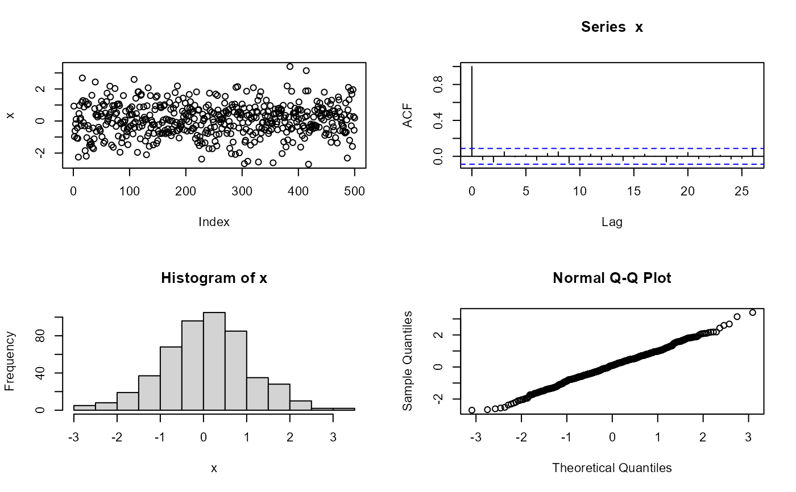
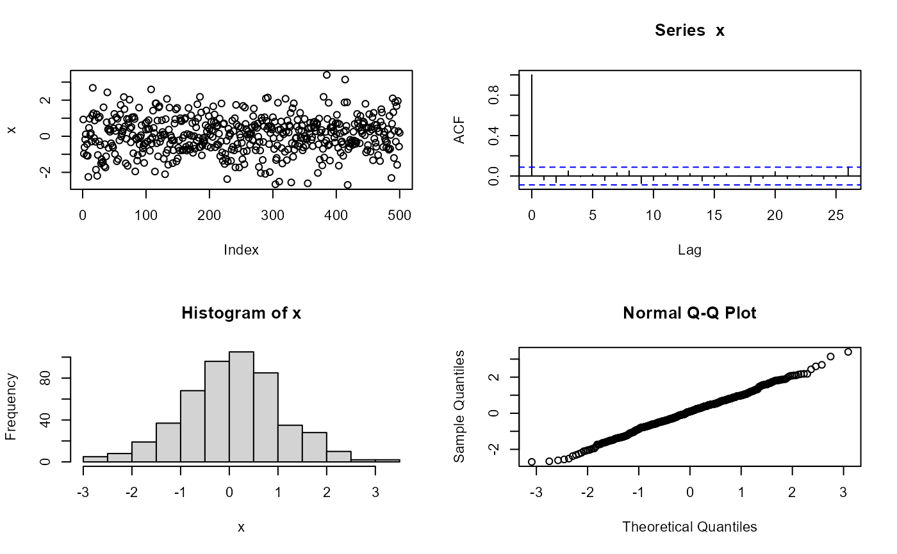

Interactive Plot Utility
utils-interactivePlot.RdPlots with emphasis on interactive plots.
Arguments
- x
an object to be plotted.
- choices
-
a character vector of length at most 9, giving descriptive names of the plots for the menu presented to the user.
- plotFUN
-
a vector of the same length as
choices, containing functions and/or names of functions.plotFUN[[i]]is called to produce the plot corresponding tochoice[i]. - which
-
Which graph(s) should be displayed? One of the character strings
"ask"(ask the user) or"all"(produce all plots), or a logical vector in which the positions of theTRUEvalues designate the plots to produce. - ...
-
additional arguments passed to the FUN or plot function. (2023-10-21 GNB: currently the
"..."arguments are not really passed on to the plotting functions.)
Details
If which is the character string "ask", then the user
is presented with a menu to interactively choose which plot(s) to
show. Argument choices is used for the choices in the menu, so
they should be informative.
If which is equal to "all" all plots are drawn. If
which is a logical vector, the indicated plots are displayed.
Note that if more plots are to be shown in one window, the arrangement should be made in advance (and cleaned up afterwards), see the examples.
Examples
## Test Plot Function
testPlot <- function(x, which = "all", ...) {
## Plot Function and Addons
plot.1 <<- function(x, ...) plot(x, ...)
plot.2 <<- function(x, ...) acf(x, ...)
plot.3 <<- function(x, ...) hist(x, ...)
plot.4 <<- function(x, ...) qqnorm(x, ...)
## Plot
interactivePlot(
x,
choices = c("Series Plot", "ACF", "Histogram", "QQ Plot"),
plotFUN = c("plot.1", "plot.2", "plot.3", "plot.4"),
which = which, ...)
## Return Value
invisible()
}
## Plot
## prepare the window and store its previous state
op <- par(mfrow = c(2, 2), cex = 0.7)
## produce the plot
testPlot(rnorm(500))
 ## restore the previous state
par(op)
## Try:
## par(mfrow = c(1,1))
## testPlot(rnorm(500), which = "ask")
## similar to above but using functions for plotFUN
testPlot_2 <- function(x, which = "all", ...) {
interactivePlot(
x,
choices = c("Series Plot", "ACF", "Histogram", "QQ Plot"),
plotFUN = c(plot.1 = function(x, ...) plot(x, ...),
plot.2 = function(x, ...) acf(x, ...),
plot.3 = function(x, ...) hist(x, ...),
plot.4 = function(x, ...) qqnorm(x, ...) ),
which = which, ...)
## Return Value:
invisible()
}
## produce the plot
op <- par(mfrow = c(2, 2), cex = 0.7)
testPlot_2(rnorm(500))

par(op)
## restore the previous state
par(op)
## Try:
## par(mfrow = c(1,1))
## testPlot(rnorm(500), which = "ask")
## similar to above but using functions for plotFUN
testPlot_2 <- function(x, which = "all", ...) {
interactivePlot(
x,
choices = c("Series Plot", "ACF", "Histogram", "QQ Plot"),
plotFUN = c(plot.1 = function(x, ...) plot(x, ...),
plot.2 = function(x, ...) acf(x, ...),
plot.3 = function(x, ...) hist(x, ...),
plot.4 = function(x, ...) qqnorm(x, ...) ),
which = which, ...)
## Return Value:
invisible()
}
## produce the plot
op <- par(mfrow = c(2, 2), cex = 0.7)
testPlot_2(rnorm(500))

par(op)